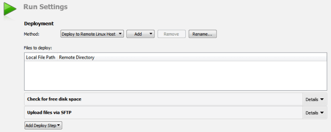
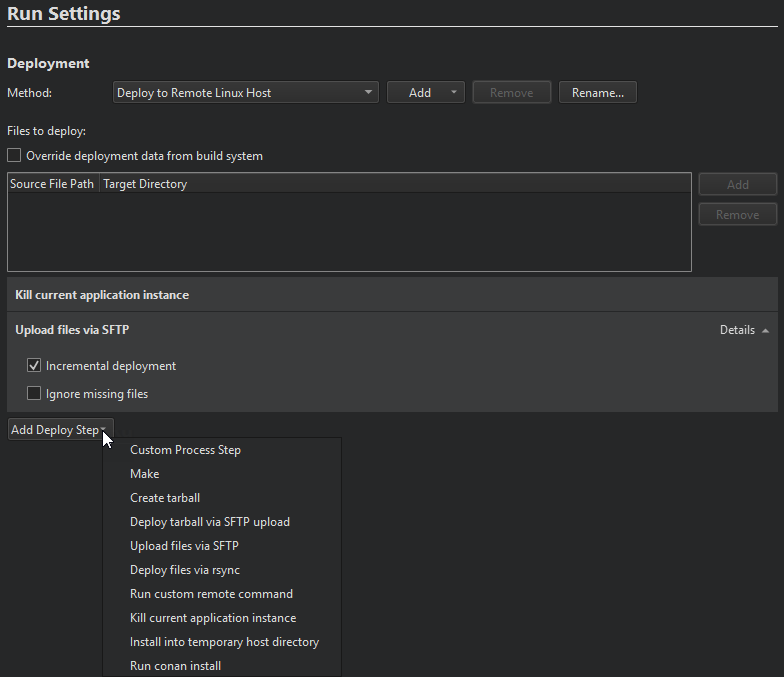
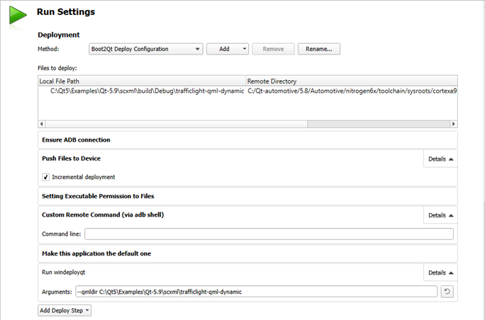

Deploying Applications to Embedded Linux Devices
You can specify settings for deploying applications to generic Linux devices in the project .pro file. You can view the settings in the Run Settings.

The files to be installed are listed in the Deployment step, the Files to deploy field. The Local File Path field displays the location of the file on the development PC. The Remote Directory field displays the folder where the file is installed on the device. Text in red color indicates that the information is missing. Edit the qmake INSTALLS variable in the project .pro file to add the missing files.
When you run the application, Qt Creator copies the necessary files to the device and starts the application on it.
For example, adding
target.path = /root INSTALLS += target
to the project .pro file will copy the binary of your project to /root on the remote device. Additional files can be deployed by adding them to further targets and adding those to INSTALLS as well.
Generic Deployment Steps

When you run the application on the device, Qt Creator deploys the application as specified by the deploy steps. By default, Qt Creator copies the application files to the device by using the SSH file transfer protocol (SFTP), as specified by the Upload files via SFTP step.
If you have a lot of data to copy, select Details in the Upload Files via SFTP step, and then select the Incremental deployment check box. Qt Creator takes note of the deployment time and only copies files that have changed since the last deployment. However, when you make major changes on the device, such as removing files from the device manually or flashing a new disk image, or when you use another device with the same IP address, deselect the check box once, to have Qt Creator deploy all files again.
To only create a tarball and not copy the files to the device, select Add Deploy Step > Create tarball. Then remove all other deploy steps.
The Deploy tarball via SFTP upload step specifies that Qt Creator uploads the tarball to the device and extracts it.
The Check for free disk space step is by default the first deploy step. Use it to find out whether the remote file system has enough space left to deploy your project. Errors due to lack of disk space can otherwise be hard to detect.
Note: If the SFTP upload fails, make sure that the remote device has SFTP enabled in its SSH daemon. Some versions of Dropbear that come without SFTP support will crash when an SFTP upload is being attempted. This is not a bug in Qt Creator.
Qt for Device Creation Deployment Steps
The deployment steps depend on the Qt for Device Creation version specified in the kit.
Developing with Qt 5.8 or Earlier
The generic deployment steps are not available when developing with Qt for Device Creation version 5.8 or earlier.

By default, Qt Creator pushes the files to the device incrementally over an ADB connection. When developing on Windows, executable permissions are set for executable files after they are deployed to the device.
To execute custom commands, select Add Deploy Step > Custom Remote Command (via adb shell) and enter the command to execute.
Note: You can add custom commands also as build steps, to have them executed when the application is built.
To have your application launch on boot, select Add Deploy Step > Make this application the default one.
Developing with Qt 5.9 or Later
When developing with Qt for Device Creation version 5.9 or later, you can specify the deployment steps described in this section in addition to the generic deployment steps. To execute custom commands when the application is deployed to the device, select Add Deploy Step > Run Custom Remote Command and enter the command to execute.
To have your application launch on boot, select Add Deploy Step > Change Default Application.
Deploying CMake Projects to Embedded Linux Devices
Qt Creator cannot extract files to be installed from a CMake project, and therefore, only executable targets are automatically added to deployment files. You must specify all other files in the QtCreatorDeployment.txt file that you create and place in either the root directory of the CMake project or the build directory of the active build configuration. Currently, Qt Creator first checks the root directory and only if no QtCreatorDeployment.txt exists it checks the active build directory.
Use the following syntax in the file:
<deployment/prefix> <relative/source/file1>:<relative/destination/dir1> ... <relative/source/filen>:<relative/destination/dirn>
Where:
<deployment/prefix>is the (absolute) path prefix to where files are copied on the remote machine.<relative/source/file>is the file path relative to the CMake project root. No directories or wildcards are allowed in this value.<relative/destination/dir>is the destination directory path relative todeployment/prefix.
To automate the creation of QtCreatorDeployment.txt file:
- Define the following macros in the top level
CMakeLists.txtfile:file(WRITE "${CMAKE_SOURCE_DIR}/QtCreatorDeployment.txt" "<deployment/prefix>\n") macro(add_deployment_file SRC DEST) file(RELATIVE_PATH path ${CMAKE_SOURCE_DIR} ${CMAKE_CURRENT_SOURCE_DIR}) file(APPEND "${CMAKE_SOURCE_DIR}/QtCreatorDeployment.txt" "${path}/${SRC}:${DEST}\n") endmacro() macro(add_deployment_directory SRC DEST) file(GLOB_RECURSE files RELATIVE "${CMAKE_CURRENT_SOURCE_DIR}" "${SRC}/*") foreach(filename ${files}) get_filename_component(path ${filename} PATH) add_deployment_file("${filename}" "${DEST}/${path}") endforeach(filename) endmacro()
- Use
add_deployment_file(<file/name>)to add files andadd_deployment_directory(<folder/name>)to add directories (including subdirectories) to theQtCreatorDeployment.txtfile. - Re-run
cmakeafter you add or remove files using the macros.